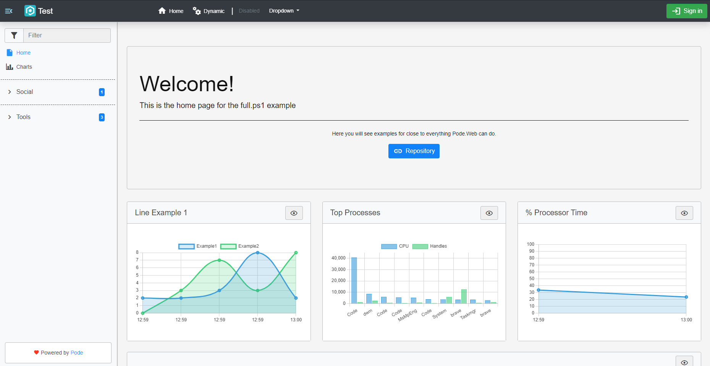
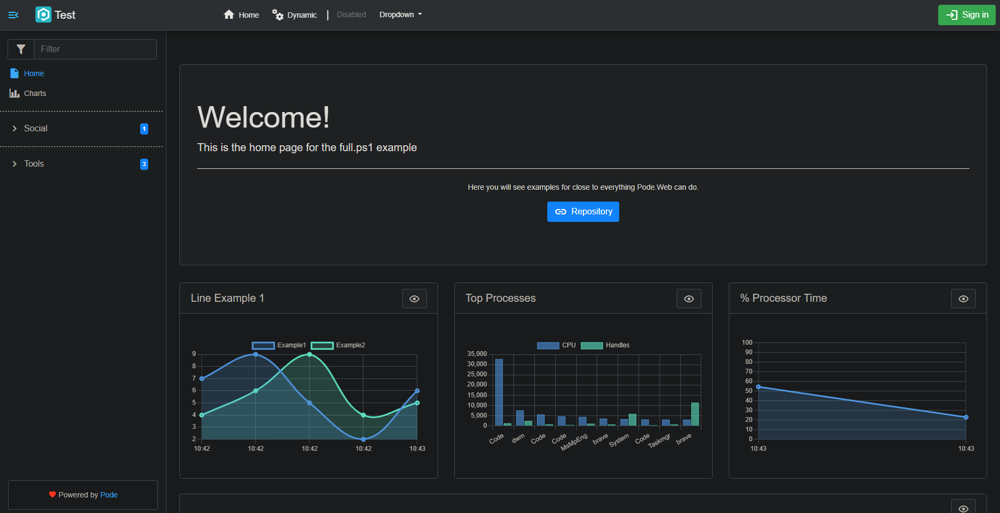
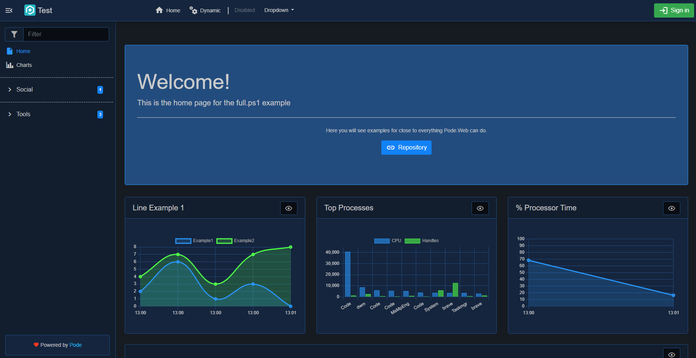
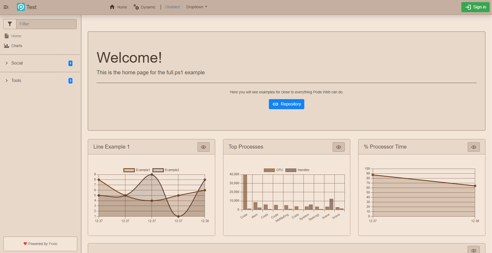
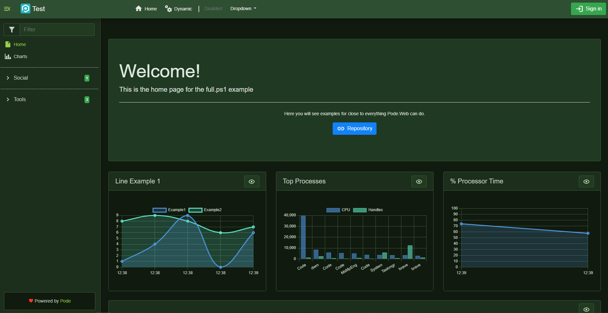
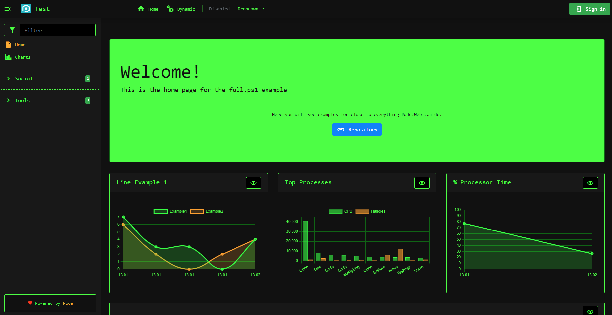
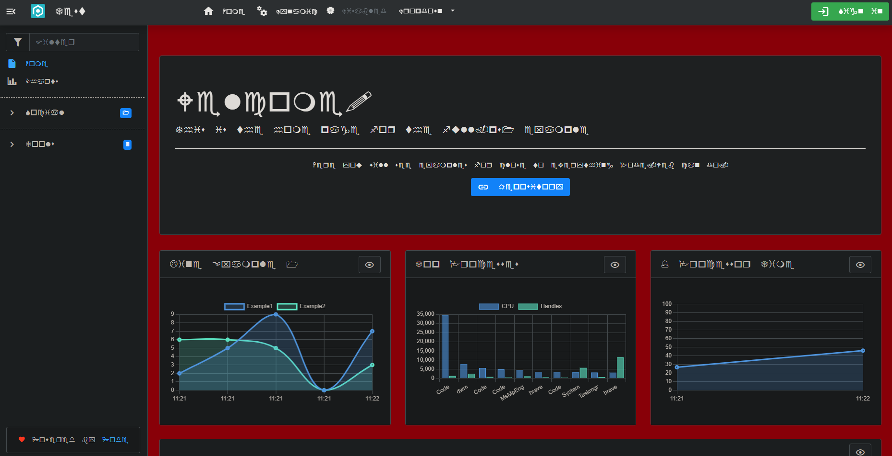
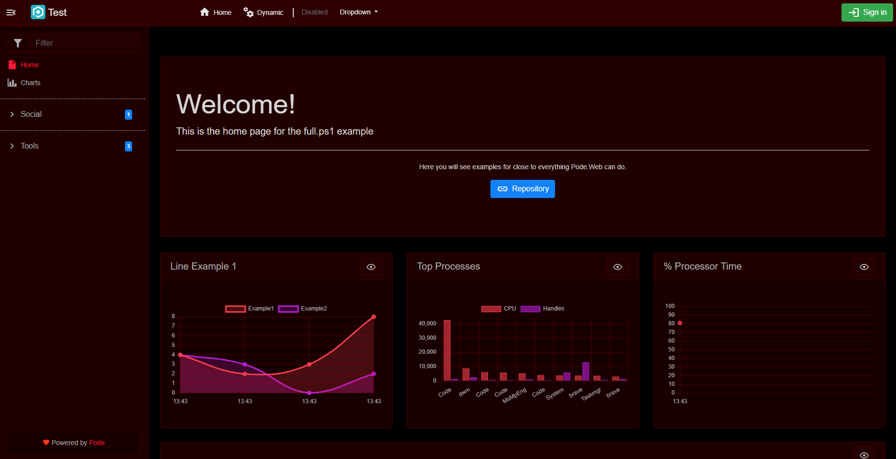

Themes
Pode.Web comes with some inbuilt themes (including a dark theme!), plus the ability to build/use custom themes. Themes are set using Use-PodeWebTemplates, or custom ones can be built using Add-PodeWebCustomTheme.
Inbuilt
Pode.Web has 7 inbuilt themes:
- Light
- Dark
- Midnight (dark blue/navy)
- Sepia (brown)
- Forest (green)
- Terminal (black/green)
- Auto (use the user's system theme)
For example, to use the Dark theme:
Use-PodeWebTemplates -Title 'Example' -Theme Dark
Examples of how the inbuilt themes look are as follows:
     
Custom
There is also a Custom theme option that lets you reference, or build, your custom themes via Add-PodeWebCustomTheme. You can add multiple custom themes, but the first one will be the initial default custom theme - this can be changed using Set-PodeWebCustomThemeDefault.
Base Theme
Whether you're referencing a custom CSS file, or building your theme using Pode.Web functions, either option allows you to use a "Base" theme to build on top of. You can use a Base theme by supplying one of the inbuilt theme names to the -Base parameter on Add-PodeWebCustomTheme:
# by URL
Add-PodeWebCustomTheme -Name 'Custom1' -Base Dark -Url 'https://example.com/custom-theme.css'
# or, building a theme
Add-PodeWebCustomTheme -Name 'Custom2' -Base Dark `
-BackgroundColourConfig (New-PodeWebBackgroundColourConfig -Page 'darkred') `
-FontFamily 'wingdings'
This will allow you to build on top of, or customise, one of Pode.Web's inbuilt themes.
URL
One option for using a custom theme is to directly create a custom CSS file, and then have Pode.Web use that file by either literal or relative URL:
Use-PodeWebTemplates -Title 'Example' -Theme Custom
# literal url
Add-PodeWebCustomTheme -Name 'Custom1' -Url 'https://example.com/custom-theme.css'
# relative url - assuming the CSS file is stored in the "/public" folder
Add-PodeWebCustomTheme -Name 'Custom1' -Url '/custom-theme.css'
Build
Instead of rolling a custom CSS file, Pode.Web comes with some functions that allow you to build your custom theme by overriding Pode.Web CSS variables. These functions can be used with Add-PodeWebCustomTheme to tailor your theme directly with PowerShell:
| Function | Description |
|---|---|
New-PodeWebBackgroundColourConfig |
Allows you to override base background colours |
New-PodeWebBorderColourConfig |
Allows you to override base border colours |
New-PodeWebTextColourConfig |
Allows you to override base text colours |
New-PodeWebNavColourConfig |
Allows you to override colours specific to the top Navigation header |
New-PodeWebToastColourConfig |
Allows you to override colours specific to Toast messages |
New-PodeWebCalendarIconColourConfig |
Allows you to override colours specific to Calendar icons on textboxes |
New-PodeWebChartColourConfig |
Allows you to override colours specific to Charts |
Note
Each function accepts a colour to customise the theme, colours must be supplied in either hex, rgb, rgba, or named format. For example: #111, #1a3e4f, dodgerblue, rgb(255, 0, 0), or rgba(255, 0, 0, 0.5).
Let's say you want to use the Dark theme as a base, and change the Page background to "darkred" and the font-family to "wingdings" (because why not!):
Use-PodeWebTemplates -Title 'Example' -Theme Custom
Add-PodeWebCustomTheme -Name 'Custom1' -Base Dark `
-BackgroundColourConfig (New-PodeWebBackgroundColourConfig -Page 'darkred') `
-FontFamily 'wingdings'
Only the parameters you supply will be applied and override the base theme - in this case, the Page background colour and the font-family, and all other colours will come from the base Dark theme:

A fuller example, still using the Dark theme as a base, would be as follows. Here we supply nearly all possible configuration to build a custom darkred theme:
Use-PodeWebTemplates -Title 'Test' -Logo '/pode.web-static/images/icon.png' -Theme Custom
$bgColourConfig = @{
Page = '#000'
Hero = '#210000'
Primary = '#1a0000'
Secondary = '#1f0000'
Tertiary = '#240000'
}
$bgColourConfig = New-PodeWebBackgroundColourConfig @bgColourConfig
$borderColourConfig = @{
Primary = '#4c0000'
Secondary = '#ba0000'
Tertiary = '#4c0000'
}
$borderColourConfig = New-PodeWebBorderColourConfig @borderColourConfig
$txtColourConfig = @{
Primary = '#afafaf'
Secondary = '#afafaf'
Tertiary = '#d6d6d6'
Link = '#ff2f2f'
HoverPrimary = '#ff2f2f'
HoverSecondary = '#dedede'
Disabled = '#959595'
Enabled = '#1a0000'
}
$txtColourConfig = New-PodeWebTextColourConfig @txtColourConfig
$navColourConfig = @{
Background = '#2f0000'
Border = '#4c0000'
Text = '#e3e3e3'
HoverText = '#ff1a1a'
}
$navColourConfig = New-PodeWebNavColourConfig @navColourConfig
$toastColourConfig = @{
BackgroundPrimary = '#1f0000'
BackgroundSecondary = '#3a0000'
Border = '#614d4d'
TextPrimary = '#bcbcbc'
TextSecondary = '#d6d6d6'
}
$toastColourConfig = New-PodeWebToastColourConfig @toastColourConfig
$calColourConfig = @{
Primary = 'invert(0%)'
Hover = 'invert(100%) sepia() brightness(30%) saturate(10000%) hue-rotate(120deg)'
}
$calColourConfig = New-PodeWebCalendarIconColourConfig @calColourConfig
$chartColourConfig = @{
Point = @('#ff4a4a', '#bd10e0', '#4a90e2', '#b8e986', '#ffdab9')
Grid = '#4c0000'
Tick = '#afafaf'
Border = '#4c0000'
}
$chartColourConfig = New-PodeWebChartColourConfig @chartColourConfig
Add-PodeWebCustomTheme -Name 'DarkRed' -Base Dark `
-BackgroundColourConfig $bgColourConfig `
-BorderColourConfig $borderColourConfig `
-TextColourConfig $txtColourConfig `
-NavColourConfig $navColourConfig `
-ToastColourConfig $toastColourConfig `
-CalendarIconColourConfig $calColourConfig `
-ChartColourConfig $chartColourConfig
which looks as follows:

Calendar Icons
Above it was mentioned that colours are supplied in hex, rgb, etc. formats. However, for calendar icon colours, configured via New-PodeWebCalendarIconColourConfig, the format is very different. Here, you need to a format such as invert(100%) sepia() brightness(60%) saturate(10000%) hue-rotate(60deg). Further information about this format can be found here.
Set the Theme
You can override the default theme on a per-user basis by either setting the pode.web.theme cookie on the frontend, or by setting a Theme property in the user's authentication object:
New-PodeAuthScheme -Form | Add-PodeAuth -Name Example -ScriptBlock {
param($username, $password)
return @{
User = @{
Theme = 'Light'
}
}
}
The theme that gets used is defined in the following order:
- Cookie
- User Authentication
- Server Default
You can also use the Update-PodeWebTheme and Reset-PodeWebTheme actions.